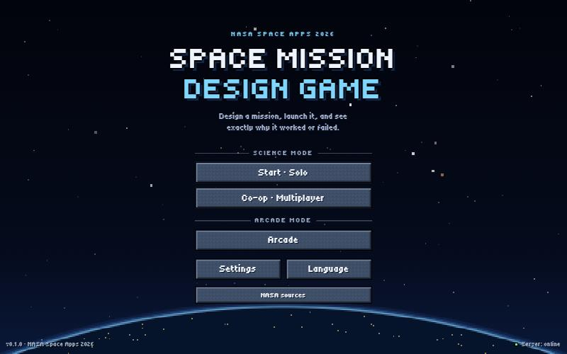
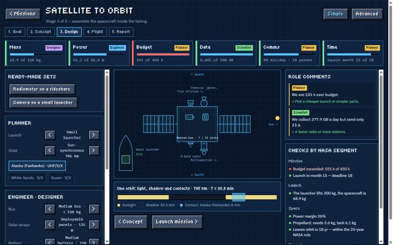
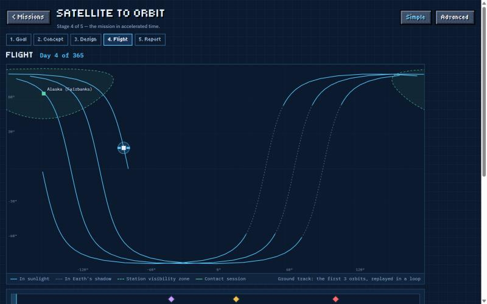
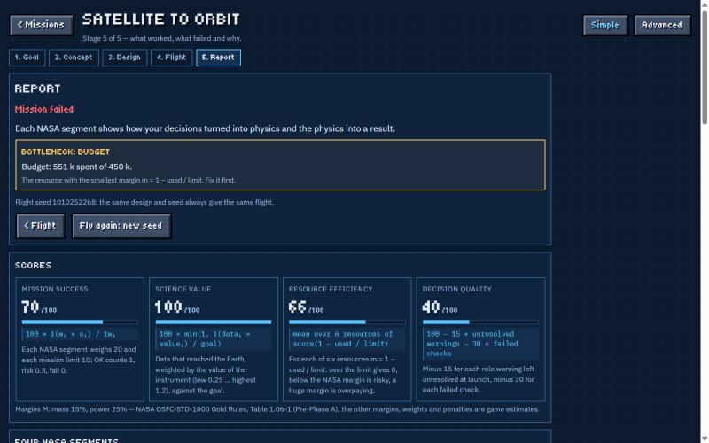

NASA SPACE APPS CHALLENGE 2026
Space Mission Design Game
Design a mission, launch it, and see exactly why it worked — or failed.
Challenge: Space Mission Design Game · Team [team name]

1 / 7
THE GAP
Students learn orbits, rockets and spacecraft one by one — and never see how they pull on each other inside one mission.
Six limited resources
Mass, power, budget, data, comms and time — all shared, all on screen.
Every choice has a price
A better camera needs a faster radio, more power, more budget and a bigger launcher.
Failure should teach
Not just a score: the game names the reason and lets you fix the design and fly again.
2 / 7
Five stages, like a real NASA mission
1
Goal
The end product and the limits: 500 GB in 12 months, 450k budget, launch by month 18.
2
Concept
Orbit, launcher and ground stations — and what each orbit means.
3
Design
Assemble the spacecraft on a blueprint, part by part.
4
Flight
The mission in accelerated time on a map of the Earth.
5
Report
What worked, what failed and why — then back to any stage.
Four roles — Planner, Scientist, Engineer, Designer. Each decision has one owner; the roles collide through shared resources, even in single player.
3 / 7
Every decision has a price

- Six resource bars update after every change.
- Roles comment: “We collect 278 GB a day but send only 24.”
- No single right answer: a cheap rideshare forces modest parts.
- Two depths: simple gives advice; advanced shows every formula and its NASA source.
4 / 7
Fly it — then see why


DECISION
Sun-synchronous orbit at 705 km
→
PHYSICS
One orbit takes 99 min; the Earth’s shadow covers 36% of it
T = 2π√(r³/μ)
→
RESULT
The battery must carry the spacecraft through every shadow
5 / 7
Real NASA data, real NASA formulas
NASA DONKI
Real historical geomagnetic storms replayed during the flight, with date and Kp.
SmallSat State-of-the-Art 2026
Solar arrays, batteries, radios and engines in the parts catalog.
GSFC-STD-1000 Gold Rules
Mass 15% and power 25% margins for a concept-stage mission.
Earth Fact Sheet · GMAT · Std Atmosphere
Orbit period, Earth’s shadow, ground track, drag and orbit decay.
NASA-STD-8719.14C
The 25-year rule for leaving orbit after the mission.
Near Earth Network
Ground stations and their elevation mask.
Every number is labelled: NASA · derived from NASA formulas · game estimate. The backend computes it all; the screen only shows it.
6 / 7
Where we are
Working now
- Mission 1 from goal to report, in English and Ukrainian
- Backend physics for an ISS cargo mission and a CubeSat training mission
- Attempts saved and compared; the same seed replays the same flight
- CI on every pull request: build, lint and 80+ backend tests
Next
- Co-op for 2–4 players over a local network — designed, one role per player
- ISS rendezvous and CubeSat screens
- Library of similar real NASA missions for the report
github.com/Shelbythx/space-game · How we used AI: docs/ai-usage.md
7 / 7